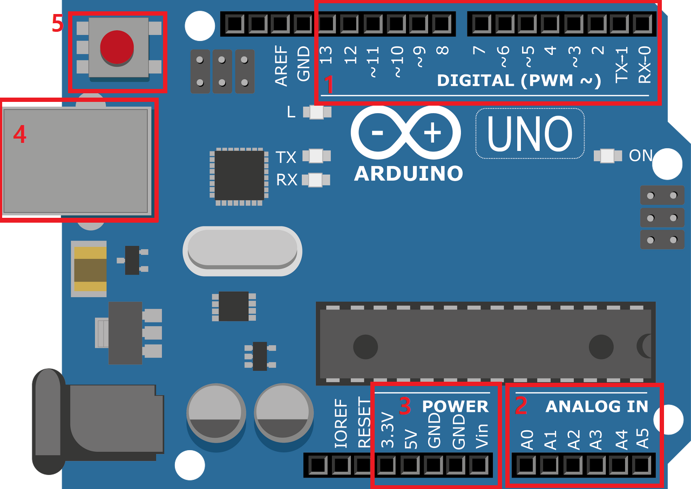
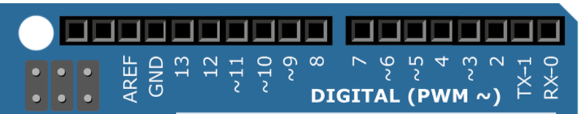
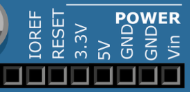
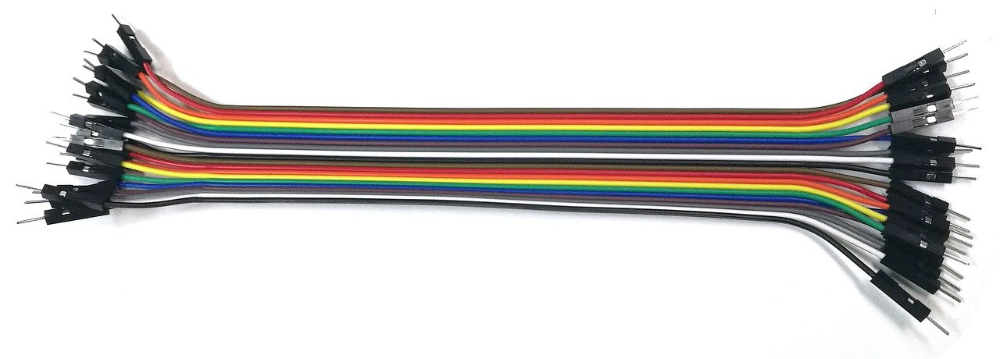
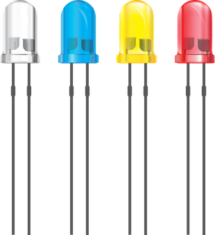
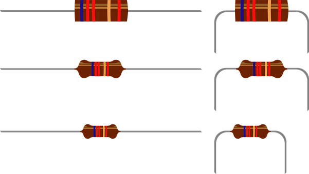

| 1 DIGITAL(PWM~) |  | 아두이노로 부터 디지털 신호(0,1)가 전달 PWM(~)로표시된 핀은 아날로그신호(0~255)도 전달가능 |
| 2 ANALOG IN |  |
외부 부품으로부터 전달되는 아날로그 신호(0~255)를 받는 핀 |
| 3 POWER |  | 외부 부품으로의 전원공급 접지(전류가 다른곳으로 새지 않게 방지) |
| 4 USB TYPE 소켓 | 아두이노 전원공급, USB TYPE | |
| 5 RESET | RESET 버튼 |
| 브레드보드 |  |
전자회로 실험에서 기판에 납땜을 하지 않고도 회로를 구성할 수 있는 회로 구성용 도구 빵판이라고도 불림 |
| 점퍼선 |  | 브레드 보드의 모듈(부품)과 아두이노 우노를 연결 |
| LED 모듈 |  | 빛을 내는 모듈 긴다리가 +극 , 짧은다리가 -극 |
| 저항 |  | 전기가 지나가는 것을 방해 전압에 의해 부품이 손상되는 것을 방지 |